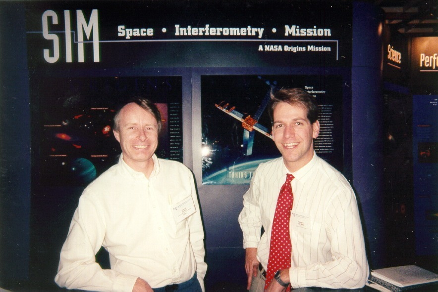

This
picture was snapped at the 1998
Winter AAS meeting in Washington, DC, where Dr.
Steve Unwin and I were manning the Space
Interferometry Mission (SIM) booth. Steve is the Deputy
Project Scientist for the Space Interferometry Mission (SIM); I work
on Steve's SIM Science Team as the Keck
Interferometer science
representative, in addition to my other duties at JPL.
Behind us is a poster of the 'SIM Classic' design.
My previous about page is available.
Last updated: 18 May 1998